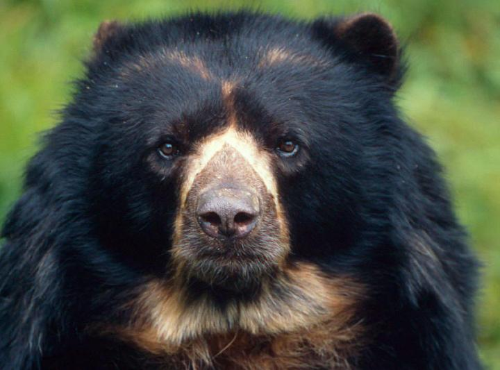
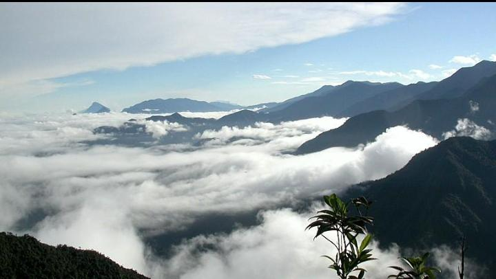
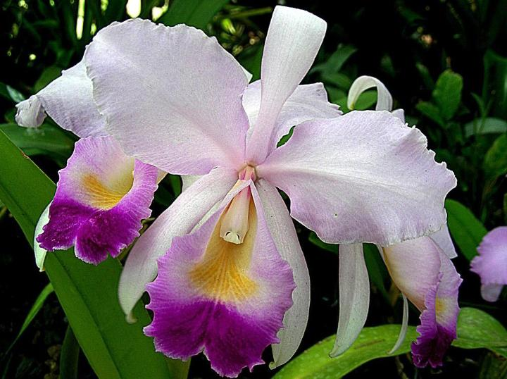
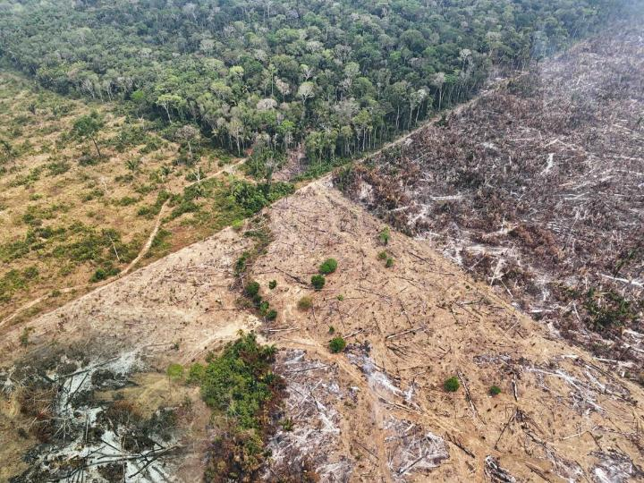

01 · FAUNA
La vida animal
Conoce especies animales, sus características, su importancia ecológica y las amenazas que enfrentan.
Explorar fauna →Conoce la fauna, la flora y los ecosistemas de nuestro territorio. Aprender sobre la naturaleza es el primer paso para protegerla.

Un territorio lleno de vida
Esta plataforma reúne información educativa sobre especies, ecosistemas, amenazas ambientales y acciones de conservación, para facilitar su consulta y fortalecer la sensibilización ambiental de la comunidad.

Explora los contenidos y descubre por qué es importante cuidar la biodiversidad de nuestro territorio.
Conoce especies animales, sus características, su importancia ecológica y las amenazas que enfrentan.
Explorar fauna →
Descubre plantas, flores y su importancia para el equilibrio de los ecosistemas.
Explorar flora →
Identifica amenazas ambientales y aprende recomendaciones para proteger la biodiversidad.
Aprender a conservar →Comprende qué es la biodiversidad, cómo funcionan los ecosistemas y por qué debemos conservarlos.
Aprender más →Conocer la naturaleza es el primer paso para valorarla, protegerla y compartir su importancia con los demás.
Volver al inicio ↑